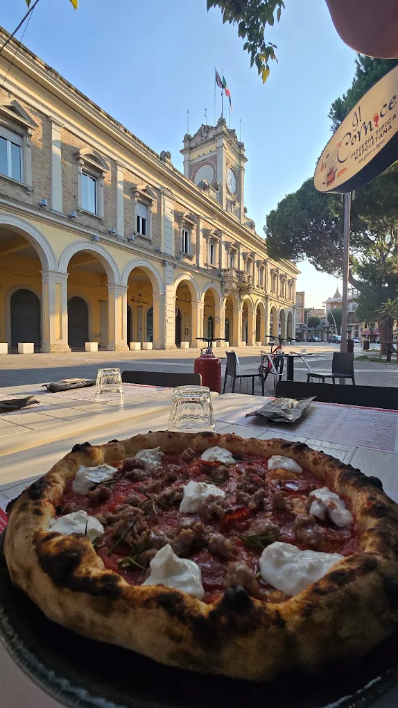
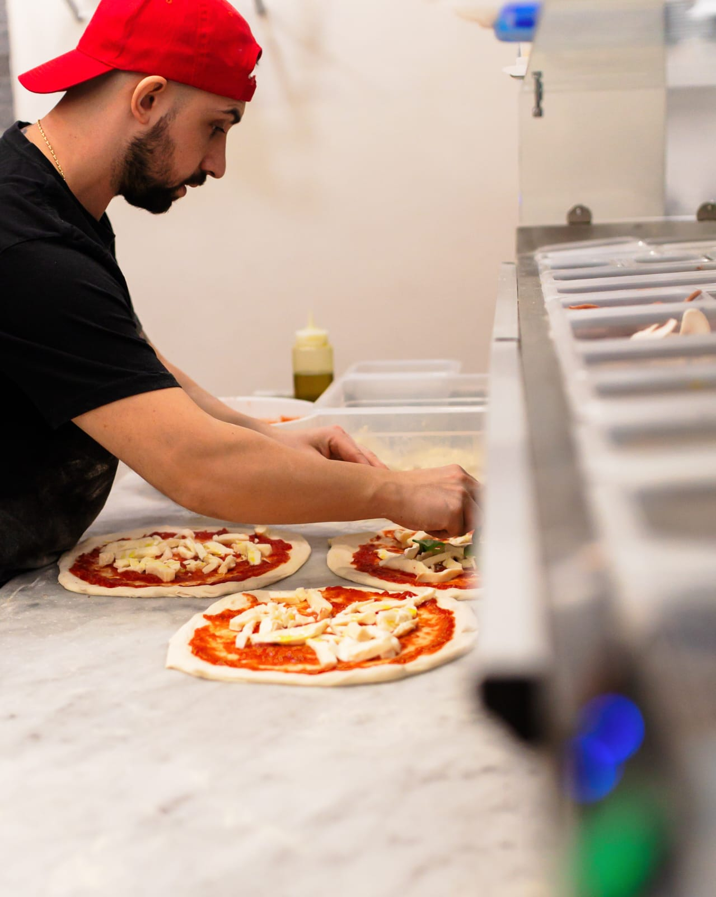
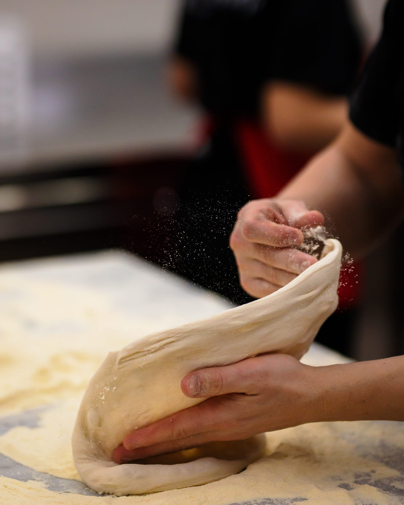
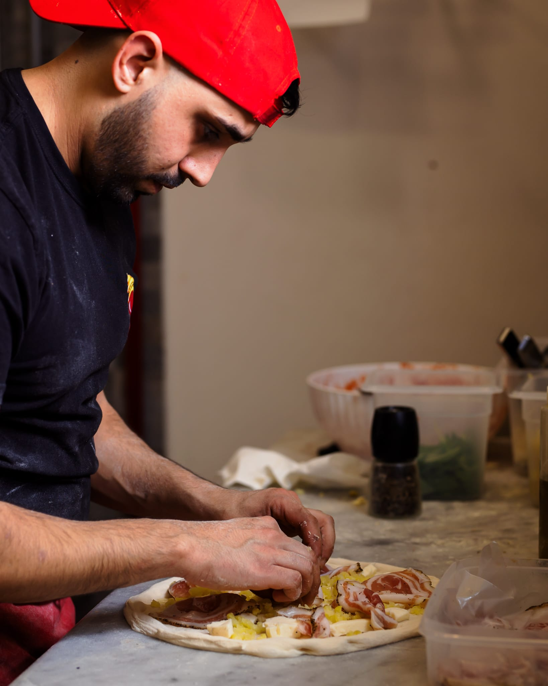
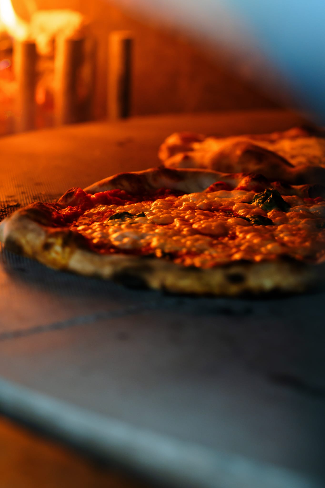
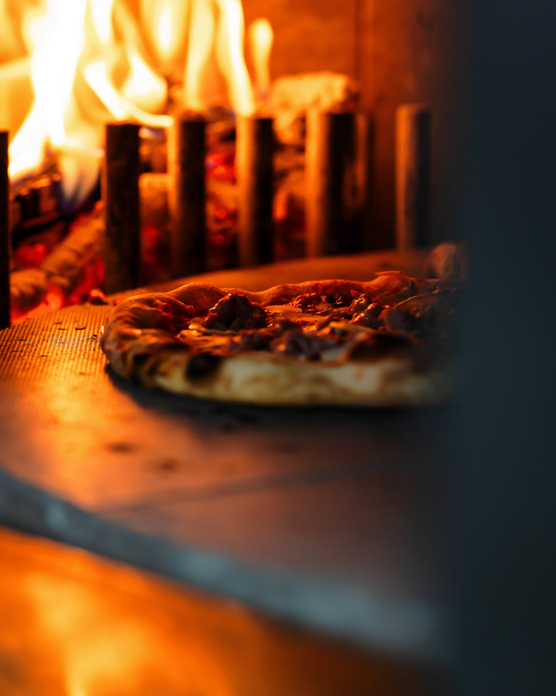

Una pizzeria di quartiere, fatta con mani vere.
Dalle prime esperienze al banco, fino a Morciano.
Mi chiamo Davide e la pizza, per me, è sempre stata una vocazione prima ancora che un lavoro. Dopo anni passati a imparare i segreti della panificazione, a studiare le idratazioni e a fare esperienza sul campo, ho capito che era il momento di dare vita a qualcosa di mio. Volevo una pizzeria che non fosse solo un punto di passaggio, ma un punto di riferimento qui a Morciano di Romagna.
Quando ho aperto Il Cornicello sapevo che la qualità degli ingredienti non sarebbe bastata senza l'ingrediente più importante: le persone. Per questo ho voluto accanto a me un team speciale.

Il nostro modo di lavorare
Ogni passaggio ha il suo tempo: dall'impasto alla farcitura, fino al forno. La cura si vede nei dettagli e si sente al primo morso.




Una pizza sincera, da mangiare qui o portare via.
Da Il Cornicello trovi pizze sottili, proposte più alte alla napoletana, fritti e specialità da condividere. Il resto lo fanno l'accoglienza, il forno e quella voglia di tornare che riconosci subito.
Scopri il menù